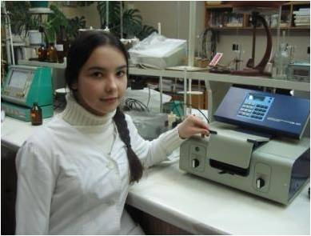
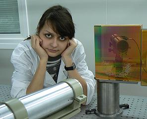

Научное объединение
Школа юного исследователя
Школа юного исследователя (ШЮИ) - научное объединение школьников, которые стремятся к более глубокому познанию в различных областях науки, техники, культуры, к развитию творческого мышления, интеллектуальной инициативы, самостоятельности, приобретению умений и навыков исследовательской работы.
Участники - учащиеся 8-11-х классов.
Отбор участников - конкурсный.
Количество учащихся - 70 человек.
Направления:физика, астрономия и астрофизика, биофизика, техника, прикладная информатика и математика, химия.
Функции:
- Знакомит с методами и приемами научного поиска.
- Формирует умения работать с научной литературой, отбирать, анализировать, систематизировать информацию,
выявлять и формулировать исследовательские проблемы, проводить лабораторный и виртуальный исследовательский эксперимент,
обрабатывать и анализировать полученные результаты, грамотно оформлять научную работу.
- Способствует овладению искусством дискуссии, технологией публичного выступления.
|  |  |
 |
 |
 |  |